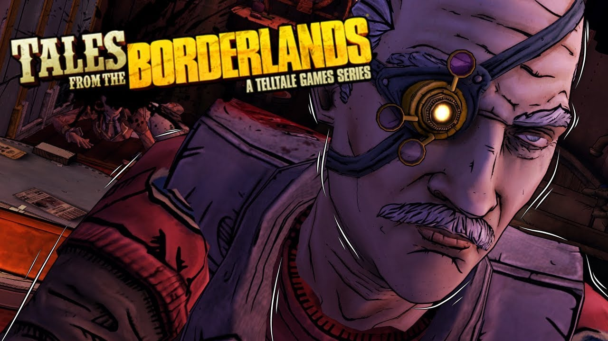

Tales from the Borderlands: A Telltale Games Series

История разработки
Telltale Games и Gearbox Software уже работали вместе над разработкой Железяки в игре Poker Night 2[6]. Согласно Стиву Эллисону из Telltale, замысел игры возник в 2012 году на церемонии Spike Video Game Awards, где представители обеих компаний занимали соседние столы. По возвращении с церемонии Telltale и Gearbox приступили к изучению своих возможностей, осозная, что во вселенной Borderlands имеется множество персонажей с интересными историями, на которые Telltale может опираться в развитии сюжета, продолжая при этом разрабатывать характеры героев, уже полюбившихся поклонникам серии[7]. В свою очередь представители Gearbox отметили, что хотя предыдущие три игры и породили интересную вселенную, но, поскольку они созданы в жанре боевика от первого лица, взаимодействие игрока с другими персонажами этого мира заметно ограничено, а потому компания видит определённый потенциал в том, чтобы дать возможность Telltale Games привнести осмысленность в эту вселенную[8].
Разработчики также пообещали, что в игре будет значительно больше юмора, чем в двух предыдущих проектах от Telltale Games — The Walking Dead: The Game и The Wolf Among Us, и что эпизоды будут выходить каждые 5—8 недель.
В озвучивании персонажей приняли участие актёры, работавшие над предыдущими играми серии, включая Дамеона Кларка (Красавчик Джек). Трой Бейкер и Лора Бэйли озвучили протагонистов игры — Риза и Фиону. Другие ведущие роли озвучили Патрик Уорбертон (Васкес), Крис Хардвик (Вон), Нолан Норт (Август) и Эрин Иветт (Саша). Два новых персонажа игры — Финч и Крогер — были исполнены соответственно Дэйвом Феннойем и Адамом Харрингтоном, которые озвучивали главных протагонистов двух предыдущих проектов Telltale Games (The Walking Dead, The Wolf Among Us).
8 декабря 2013 года на Spike Video Game Awards (VGX) 2013 разработчики анонсировали игру.
14 ноября 2014 года вышел первый трейлер игры, в котором были показаны некоторые сцены из первого эпизода[9].
Игровой процесс
В игре Tales from the Borderlands присутствует point-and-click механика. Такая механика присутствует и в других играх от Telltale Games. Игрок, управляя персонажем, исследует окружающий мир, общается с неигровыми персонажами и взаимодействует с элементами локации, а также собирает и использует различные предметы. Выбор и действия игрока будут влиять на сюжетные элементы в более поздних эпизодах. В игре также будут присутствовать шутер элементы. Добыча, полученная в игре, может быть использована в других играх серии Borderlands.